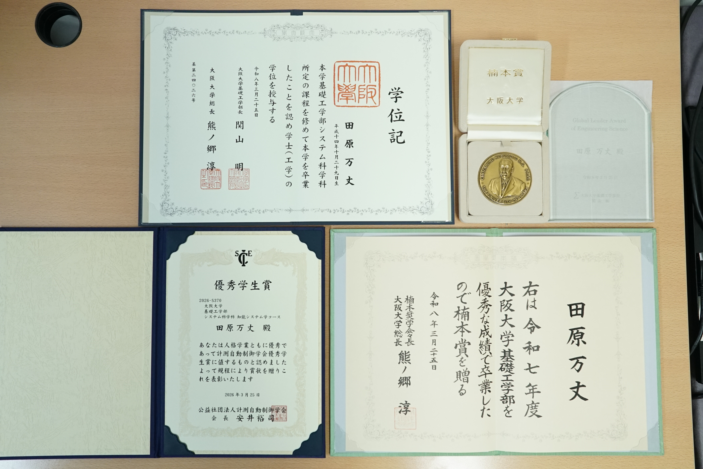
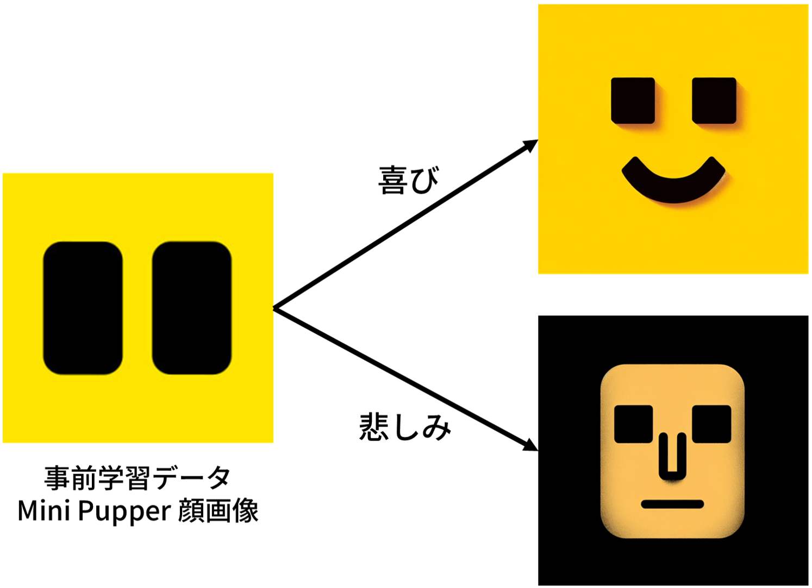
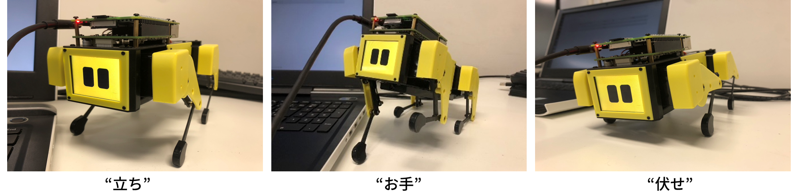

最終更新日：2026年6月23日
28卒，主にXR分野を専攻している大学院生です。
所属：大阪大学 大学院基礎工学研究科 システム創成専攻 システム科学領域 博士前期課程1年 岩井研究室．
趣味：絶景絶叫，美術館巡り，カメラ，XR．
専攻キーワード：XR，プロジェクションマッピング，空間コンピューティング，Computer Graphics，質感科学，自動運転，世界基盤モデル，AI，Robotics
長期インターン歴：KGモーターズ株式会社(1年半)，株式会社松尾研究所(1年)
第31回日本バーチャルリアリティ学会, 2026年度質感フォーラム, SIGGRAPH Asia 2026

楠本賞
大阪大学，大阪大学基礎工学部システム科学科首席卒業（1/200人）．
SICE優秀学生賞
計測自動制御学会，同学科からの推薦．
Σグローバルリーダー賞
大阪大学基礎工学部，夏の海外留学プログラムでの成果．
競技説明
公益社団法人自動車技術会が主催する，自動運転アルゴリズムの精度を競う国内コンペティションです．予選では独自のUnityシミュレーション環境であるAWSIMを用いたデジタルツイン空間でのラップタイムを競い，決勝では実機カートを用いたリアル空間での完全自動走行によるタイムアタックが行われました．
開発期間
2025年7月1日～2025年10月26日の約4か月間
制作メンバー / 自身の役割
総勢8名，うち予選と決勝の両方に出場したコアメンバーは4名．私はその中で制御モデルの構築，および走行評価指標の設計と実装を担当しました．
参加背景
インターン先であるKGモーターズ株式会社のチームとして企業の部に参画しました．自社が開発する次世代モビリティであるmibotの認知拡大，およびインターン業務を通じて培った自動運転技術の社会実装や技術実証を目的として挑戦しました．
実車走行において，旋回時の最大速度を維持したままコーナリングを行うと，横転やスリップといった致命的な挙動の破綻を招きます．そこでカーブ進入前に適切な減速を行うことで意図的に前輪への荷重移動を発生させ，タイヤのグリップ力を最大限に確保しつつ，横Gを一定値以下に抑えて安定旋回させるロジックを構築しました．
この物理モデルをベースとして，シミュレータと実機の間にある挙動のギャップを埋めるため，緻密なパラメータチューニングと定量的ログ解析を幾度も重ねました．その結果，車両の安全性を高い次元で担保した上で，周回ラップタイムの大幅な短縮を実現しました．
開発概要
広島を拠点に1人乗り小型EVであるmibotを開発するスタートアップ，KGモーターズ株式会社でのインターン業務です．自動運転開発プラットフォームであるAutowareと，UnityベースのシミュレータであるAWSIMを活用し，実車テスト前のコスト削減や安全検証を目的としたデジタルツイン環境の構築を行いました．その第1段階として，自社車両の3Dモデルをシミュレータへ適合させるアセットパイプラインの構築プロセスをZennにて発信しました．
開発期間 / 担当範囲
2025年9月公開の技術検証．CADデータの変換からBlenderでのメッシュ最適化，およびUnityへのインポートと物理挙動設定までを一貫して担当しました．
使用技術・環境
Ubuntu 22.04，Unity 2022.3.36f1，Blender，AWSIM-Labs，Autoware mainブランチ
コンポーネント指向を意識した3Dモデルの最適化
AWSIM上で車両を物理駆動させ，さらに各種ライトのオンオフを動的に制御するためには，一体化された3Dモデルをコンポーネント単位へ分解する必要があります．Fusionで作成されたCADモデルをFBX形式経由でBlenderへインポートし，車体本体，独立した4輪，各種灯火類へとパーツを分割しました．
GitHubでの運用を見据えてポリゴンメッシュの反転調整やファイルサイズの軽量化を行い，BlenderからUnityへのエクスポート時に発生する右手系と左手系の座標変換エラーをトランスフォームの適用設定によって解決しました．
Unityインポート時における物理演算・描画トラブルの解消
インポートの過程で直面した，3Dゲーム開発にも共通する高度なトラブルに対し，論理的なデバッグを行いました．物理挙動設定時にWheelColliderの向きがStartと同時に横を向くバグや，メッシュオブジェクトの中心点とピボットの解離によってタイヤが分裂する現象に対し，親オブジェクトの構造の再定義やUnityAdjustPivotによる原点の再配置によって物理演算を正常化させました．
また，高解像度レンダリングパイプライン環境でマテリアルがピンク色になるShaderの不具合に対しても，HDRPのLitシェーダーへの適切なコンバートを行い，実機同様のリアルな視覚表現と正確な車両物理挙動をUnity上に再現しました．


研究概要
小型四足歩行ロボットであるMiniPupper1を用い、Linux環境におけるROS2を用いたシステムを構築しました．ユーザーの音声入力をトリガーとして、LLMによる行動決定と表情生成AIプロンプトエンジニアリングを統合した自律対話システムを個人開発しました．
開発期間 / 役割
2023年7月から2024年1月の約半年間．企画立案，予算運用，技術実装，成果報告までを1名で一貫して担当しました．
研究背景および動機
アニマルセラピーの分野においてペット型ロボットがもたらす心理的効果に着目しました．実家で暮らす愛犬との原体験から、ロボットによる癒やしのメカニズムを単に体験するだけでなく、その制御構造を自ら設計して実装することで本質的な技術アプローチを試みたいと考えたことが動機です．
エンジニアとしての抱負と得られたマインドセット
実機が駆動音を立てて思い通りに動いた瞬間から，実機制御の奥深さを学びました．同時に，どれほどアルゴリズムを改良しても物理的制約の前には限界があることを知り，ソフトとハードの両面を横断的に捉えられる人材になりたいという強い意識が芽生えました．また，思い通りに動かないエラーすらも，理想と現実のギャップを埋めるための「未知なる挙動の発見」と捉え，失敗をプロセスとして楽しむ心の余裕を培いました．この経験は，正解のない技術課題に挑み続ける現在の研究活動において，大きな支えとなっています．
| 言語・ツール | 使用年数 | 詳細 |
|---|---|---|
| C | 4年 | ソートやリスト等の基本アルゴリズムを網羅． |
| C++，ROS2，OpenCV，OpenGL | 3年 | 研究用途．実世界への幾何較正済み投影コンテンツ作成，自動運転開発． |
| C#，Unity | 3年 | Unity．自動運転開発におけるデジタルツイン実装． |
| Python，Pythorch | 3年 | 世界基盤モデル学習． |
| Blender，シェーダ言語（GLSL） | 1年 | 研究用途．発表資料作成． |
学理
計測工学，ヒューマンインタフェース工学，電子工学，制御工学，
システム最適化，信号処理，応用物理学，光学，視覚心理学，
コンピュータビジョン，コンピュータグラフィックス，機械学習．